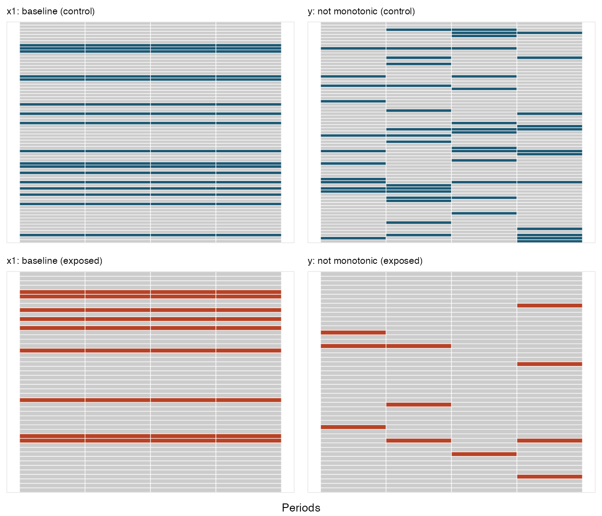
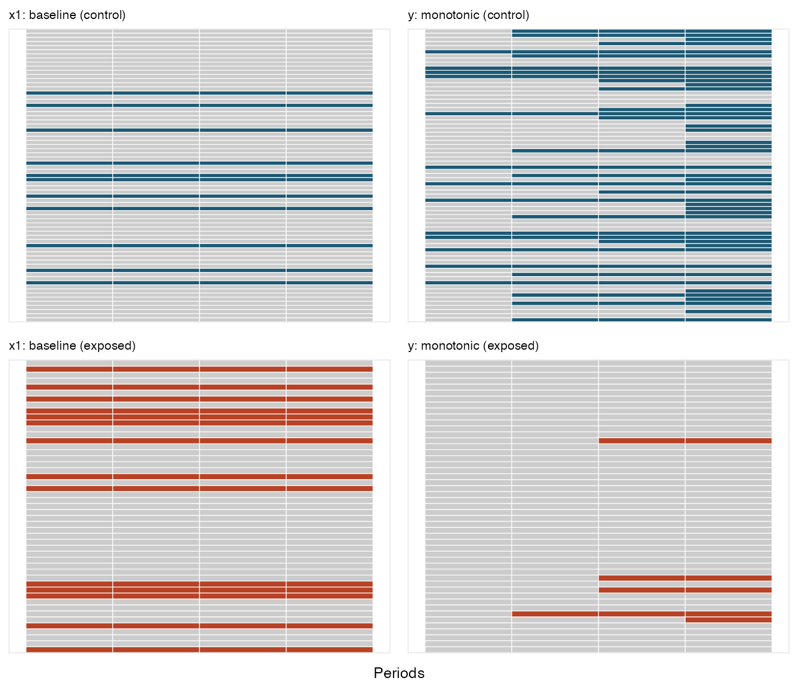

After generating a complete data set, it is possible to generate
missing data. defMiss defines the parameters of
missingness. genMiss generates a missing data matrix of
indicators for each field. Indicators are set to 1 if the data are
missing for a subject, 0 otherwise. genObs creates a data
set that reflects what would have been observed had data been missing;
this is a replicate of the original data set with “NAs” replacing values
where missing data has been generated.
By controlling the parameters of missingness, it is possible to represent different missing data mechanisms: (1) missing completely at random (MCAR), where the probability missing data is independent of any covariates, measured or unmeasured, that are associated with the measure, (2) missing at random (MAR), where the probability of subject missing data is a function only of observed covariates that are associated with the measure, and (3) not missing at random (NMAR), where the probability of missing data is related to unmeasured covariates that are associated with the measure.
These possibilities are illustrated with an example. A data set of
1000 observations with three “outcome” measures” x1,
x2, and x3 is defined. This data set also
includes two independent predictors, m and u
that largely determine the value of each outcome (subject to random
noise).
def1 <- defData(varname = "m", dist = "binary", formula = 0.5)
def1 <- defData(def1, "u", dist = "binary", formula = 0.5)
def1 <- defData(def1, "x1", dist = "normal", formula = "20*m + 20*u", variance = 2)
def1 <- defData(def1, "x2", dist = "normal", formula = "20*m + 20*u", variance = 2)
def1 <- defData(def1, "x3", dist = "normal", formula = "20*m + 20*u", variance = 2)
dtAct <- genData(1000, def1)In this example, the missing data mechanism is different for each
outcome. As defined below, missingness for x1 is MCAR,
since the probability of missing is fixed. Missingness for
x2 is MAR, since missingness is a function of
m, a measured predictor of x2. And missingness
for x3 is NMAR, since the probability of missing is
dependent on u, an unmeasured predictor of
x3:
defM <- defMiss(varname = "x1", formula = 0.15, logit.link = FALSE)
defM <- defMiss(defM, varname = "x2", formula = ".05 + m * 0.25", logit.link = FALSE)
defM <- defMiss(defM, varname = "x3", formula = ".05 + u * 0.25", logit.link = FALSE)
defM <- defMiss(defM, varname = "u", formula = 1, logit.link = FALSE) # not observed
set.seed(283726)
missMat <- genMiss(dtAct, defM, idvars = "id")
dtObs <- genObs(dtAct, missMat, idvars = "id")
missMat## id x1 x2 x3 u m
## 1: 1 0 0 0 1 0
## 2: 2 0 0 0 1 0
## 3: 3 1 0 0 1 0
## 4: 4 1 0 0 1 0
## 5: 5 1 1 0 1 0
## ---
## 996: 996 0 0 0 1 0
## 997: 997 1 0 1 1 0
## 998: 998 0 0 1 1 0
## 999: 999 0 0 0 1 0
## 1000: 1000 0 0 0 1 0
dtObs## id m u x1 x2 x3
## 1: 1 0 NA 20.45959562 19.0589959 18.8831031
## 2: 2 0 NA -0.02171217 -1.1754651 2.7250868
## 3: 3 0 NA NA -0.2560023 -0.8946801
## 4: 4 1 NA NA 42.2610689 39.3427289
## 5: 5 1 NA NA NA 41.5690449
## ---
## 996: 996 0 NA 0.58482133 0.9125383 0.5985161
## 997: 997 0 NA NA 21.2112652 NA
## 998: 998 0 NA 19.08787334 19.9381263 NA
## 999: 999 1 NA 40.81993867 40.7972644 39.5903206
## 1000: 1000 0 NA -1.54716713 -0.4090349 -0.5694904The impacts of the various data mechanisms on estimation can be seen
with a simple calculation of means using both the “true” data set
without missing data as a comparison for the “observed” data set. Since
x1 is MCAR, the averages for both data sets are roughly
equivalent. However, we can see below that estimates for x2
and x3 are biased, as the difference between observed and
actual is not close to 0:
# Two functions to calculate means and compare them
rmean <- function(var, digits = 1) {
round(mean(var, na.rm = TRUE), digits)
}
showDif <- function(dt1, dt2, rowName = c("Actual", "Observed", "Difference")) {
dt <- data.frame(rbind(dt1, dt2, dt1 - dt2))
rownames(dt) <- rowName
return(dt)
}
# data.table functionality to estimate means for each data set
meanAct <- dtAct[, .(x1 = rmean(x1), x2 = rmean(x2), x3 = rmean(x3))]
meanObs <- dtObs[, .(x1 = rmean(x1), x2 = rmean(x2), x3 = rmean(x3))]
showDif(meanAct, meanObs)## x1 x2 x3
## Actual 19.3 19.3 19.4
## Observed 19.2 17.7 18.2
## Difference 0.1 1.6 1.2After adjusting for the measured covariate m, the bias
for the estimate of the mean of x2 is mitigated, but not
for x3, since u is not observed:
meanActm <- dtAct[, .(x1 = rmean(x1), x2 = rmean(x2), x3 = rmean(x3)), keyby = m]
meanObsm <- dtObs[, .(x1 = rmean(x1), x2 = rmean(x2), x3 = rmean(x3)), keyby = m]
# compare observed and actual when m = 0
showDif(meanActm[m == 0, .(x1, x2, x3)], meanObsm[m == 0, .(x1, x2, x3)])## x1 x2 x3
## Actual 9.6 9.8 9.8
## Observed 9.5 9.6 8.4
## Difference 0.1 0.2 1.4
# compare observed and actual when m = 1
showDif(meanActm[m == 1, .(x1, x2, x3)], meanObsm[m == 1, .(x1, x2, x3)])## x1 x2 x3
## Actual 29.7 29.7 29.8
## Observed 29.7 29.7 28.6
## Difference 0.0 0.0 1.2Missingness can occur, of course, in the context of longitudinal
data. missDef provides two additional arguments that are
relevant for these types of data: baseline and
monotonic. In the case of variables that are measured at
baseline only, a missing value would be reflected throughout the course
of the study. In the case where a variable is time-dependent (i.e it is
measured at each time point), it is possible to declare missingness to
be monotonic. This means that if a value for this field is
missing at time t, then values will also be missing at all
times T > t as well. The call to genMiss
must set repeated to TRUE.
The following two examples describe an outcome variable
y that is measured over time, whose value is a function of
time and an observed exposure:
# use baseline definitions from the previous example
dtAct <- genData(120, def1)
dtAct <- trtObserve(dtAct, formulas = 0.5, logit.link = FALSE, grpName = "rx")
# add longitudinal data
defLong <- defDataAdd(varname = "y", dist = "normal", formula = "10 + period*2 + 2 * rx",
variance = 2)
dtTime <- addPeriods(dtAct, nPeriods = 4)
dtTime <- addColumns(defLong, dtTime)In the first case, missingness is not monotonic; a subject might miss a measurement but returns for subsequent measurements:
# missingness for y is not monotonic
defMlong <- defMiss(varname = "x1", formula = 0.2, baseline = TRUE)
defMlong <- defMiss(defMlong, varname = "y", formula = "-1.5 - 1.5 * rx + .25*period",
logit.link = TRUE, baseline = FALSE, monotonic = FALSE)
missMatLong <- genMiss(dtTime, defMlong, idvars = c("id", "rx"), repeated = TRUE,
periodvar = "period")Here is a conceptual plot that shows the pattern of missingness. Each
row represents an individual, and each box represents a time period. A
box that is colored reflects missing data; a box colored grey reflects
observed. The missingness pattern is shown for two variables
x1 and y:

In the second case, missingness is monotonic; once a subject misses a
measurement for y, there are no subsequent
measurements:
# missingness for y is monotonic
defMlong <- defMiss(varname = "x1", formula = 0.2, baseline = TRUE)
defMlong <- defMiss(defMlong, varname = "y", formula = "-1.8 - 1.5 * rx + .25*period",
logit.link = TRUE, baseline = FALSE, monotonic = TRUE)
missMatLong <- genMiss(dtTime, defMlong, idvars = c("id", "rx"), repeated = TRUE,
periodvar = "period")